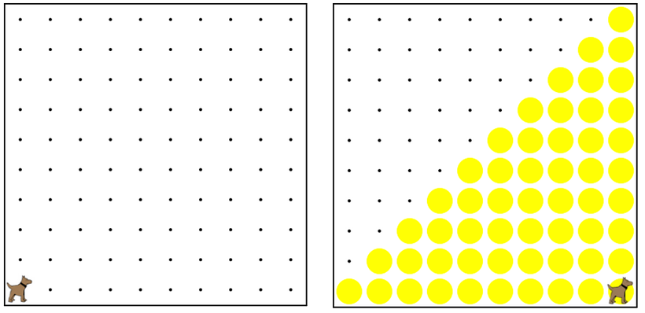

This program creates a staircase from the first spot all the way across the world for any sized world.
這個程序從一路之隔的世界上第一個專為任何規模世界創建一個樓梯。
This program works, but its indentation is completely wrong.
這個程序的工作原理，但其壓痕是完全錯誤的。
Run the program first, so you know what it does and don't break it.
第一次運行該程序，所以你知道它做什麼，不要打破它。

function start(){ 功能開始（）{
putBall() 放球();
wwhile(frontIsClear()){ 當(前方無障礙物()){
turnLeft(); 左轉();
while (ballsPresent()) { ; 而（球存在（）{
move(); 移動();
}
turnRight(); ; 右轉（）;
move(); 移動();
createStep(); ; 創建步驟（）;
}
}
function createStep() { ; 函數創建步驟（）{
turnRight(); ; 右轉（）;
putBall(); 放球();
while(frontIsClear()){ 當(前方無障礙物()){
move(); 移動();
putBall(); 放球();
}
turnLeft(); 左轉();
}